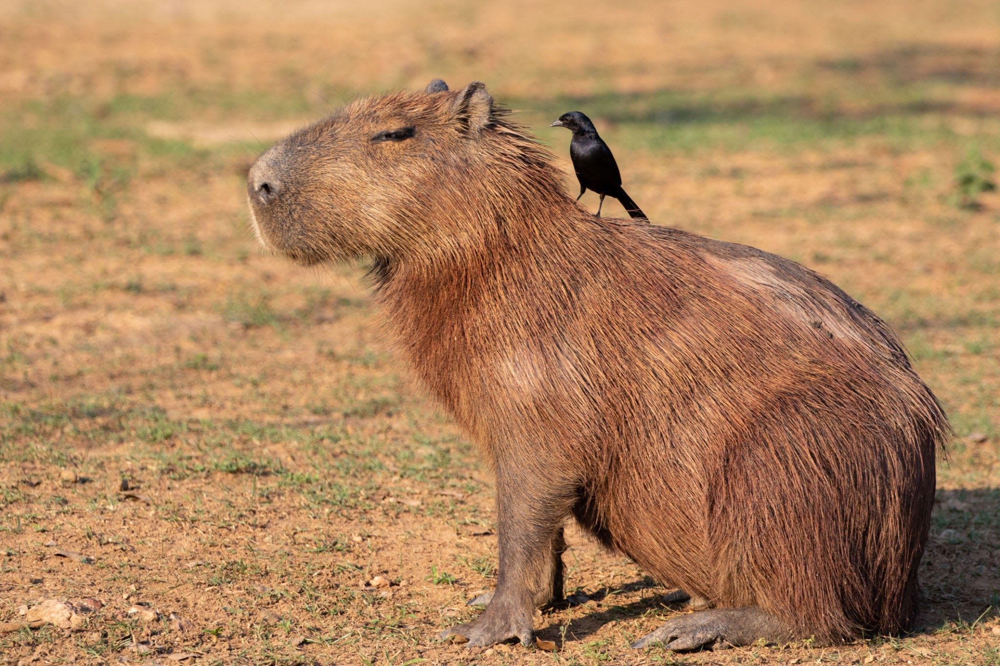

About Capybaras
Over here, is a rodent called a capybara. He is a furry friend ad very cute. People always look down in discust because they think of rodents as a nusence, but capybaras are different. They have brown fur, small eyes, and big noses.
Capybaras don't act like an average rodent. Like aren't like rats or mice, which are pesky rodents that give people the ick. Birds and monkeys love using these fellow creatures as furniture, as they lay on them, almost like a comfy couch. Even when capybaras are laying down, small animals will still lay down and sleep on them.
Fascinating Facts
Here are some fun facts about the capybara. They are phenomenal swimmers, so much to the point that they can sleep in water. Additionally, they are extremely fast, being able to run up to 35 kilometers an hour. This is impressive given that they have a large head and a significantly heavy body for their size.
Where to Find Them
It is very unfortunate that capybaras are not commonly found in America. Although it is possible, they are mostly found in South America. Thankfully, capybaras are not endangered. They are actually the one of the least concerned animals to go extinct.